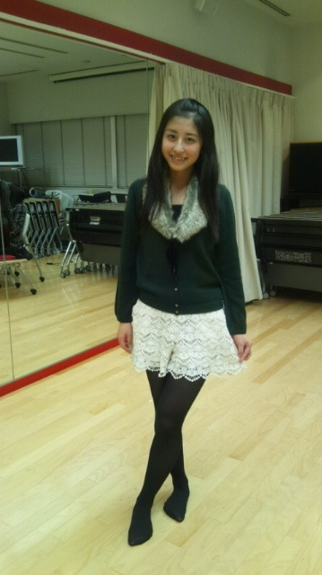
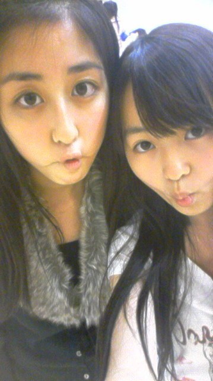

| 2012/01 18 Wed | 素。♪(ｏ・ω・)ノ) ) |

こんにちはるんっ♪(ｏ・ω・)ノ))
今まではブログなに書こう〜
ってすごい悩んじゃって考えすぎてたので
更新すごい少なかったです
でも！
これからはまいまいのブログの写真のように(笑)
素のちはるを出していくので!!
よろしくお願いします

あれっ？
まいまいのが素なの？
って思った方ーっ
そうですねっ
素ですねっ はい
メンバーとかにいつもなんかわかんないけど笑われます。笑
なんで？(；´д⊂)
今回のもただ単に満面の笑顔をーっ
って思ったから
んー(*´ω｀*)
ってゅう顔しただけなのにっ
笑われてー(´・ω・｀)
んもうっ（｀Δ´）
ひどいゎー
からの〜
ひよっこ。

withまりか

なぜでしょう。
この顔自分的に好きです。( ´艸｀)
はい!!
ちはるはこんな子です
幻滅したー(；´д⊂)
なんて思わないでくださいね
 いえあ
いえあ
いえあ
そしてっ
私服見たい(*´д｀*)〓
とゅって下さる方がいるので初！私服です
上にうpされてるやつー

まりかに撮ってもらったの
いゃあ…
こんなんだからギャップがすごいと言われるんですかね…
見た目と性格。
そういえばね、
いまね、
ひめたんちゃんとね、
デート
なんですよーっ
このあとか明日にレポ書きます(-ω☆)
待っててくださいっ
いつもるんるん♪♪(ｏ・ω・)ノ))
ちはるんるん
るん
ちは
ばいるんっ
(ごめんなさいっ コメントに書いてあるやつ勝手に使っちゃいました
 )
)
)
ちはるん
コメント(31)
2012/01/18 19:19